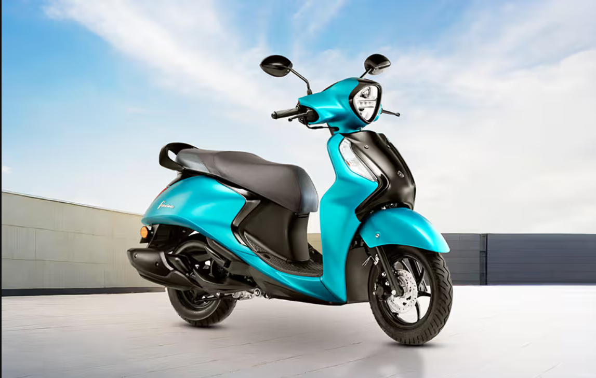

We have witnessed the arrival of several new products in the 125cc space of the Indian market, and Yamaha
Motor India has been among the participants in this segment for quite some time. While the Indian arm of the
Japanese two-wheeler maker was already present in the segment, its scooters, the Fascino 125 and the Ray ZR
125 didn’t pack as many features as their rivals.